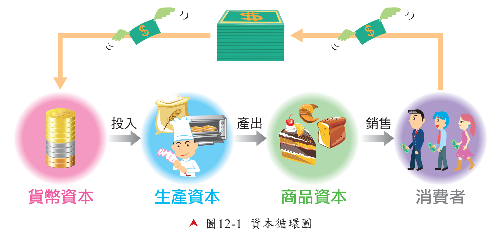
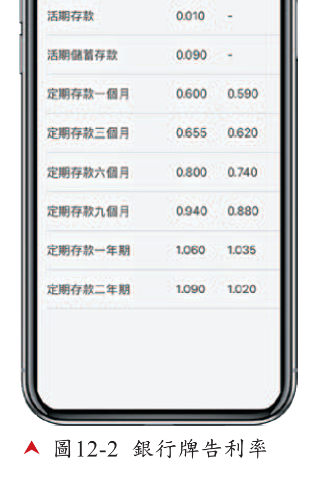
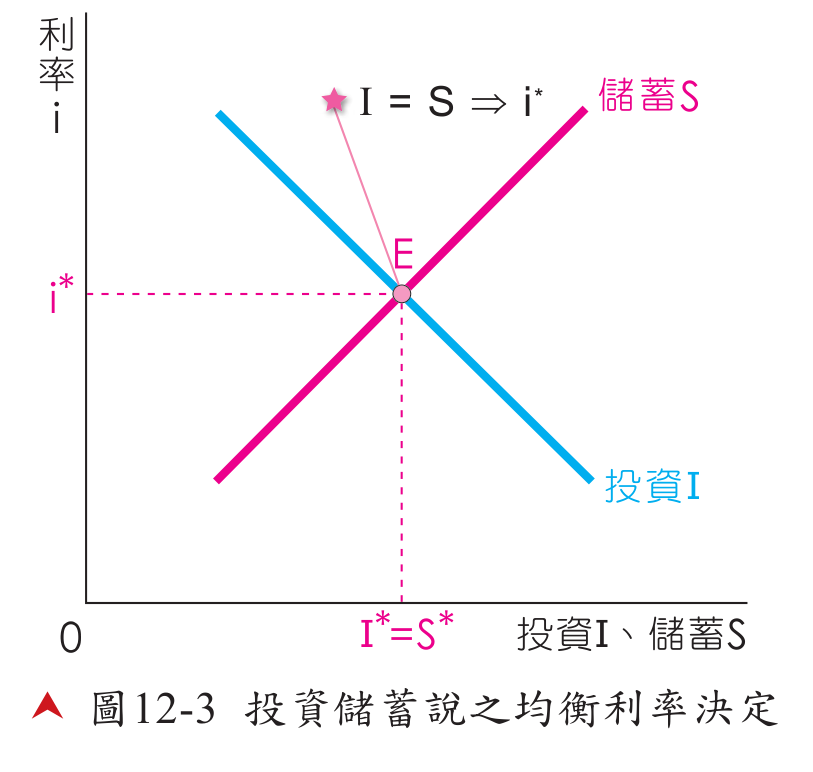
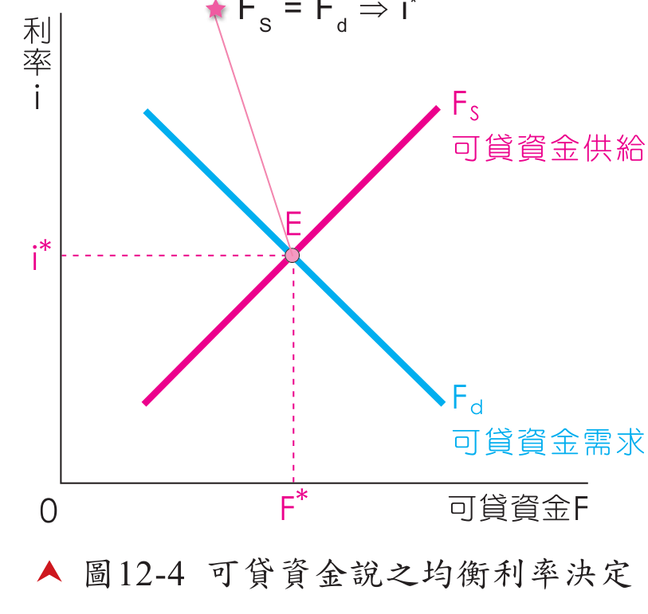
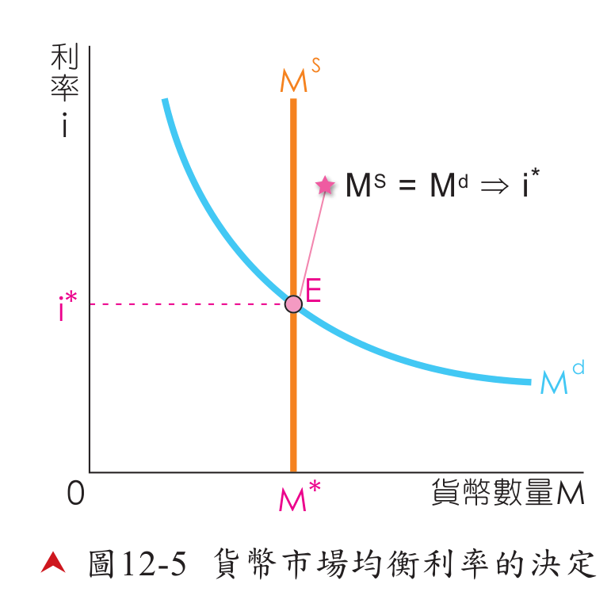
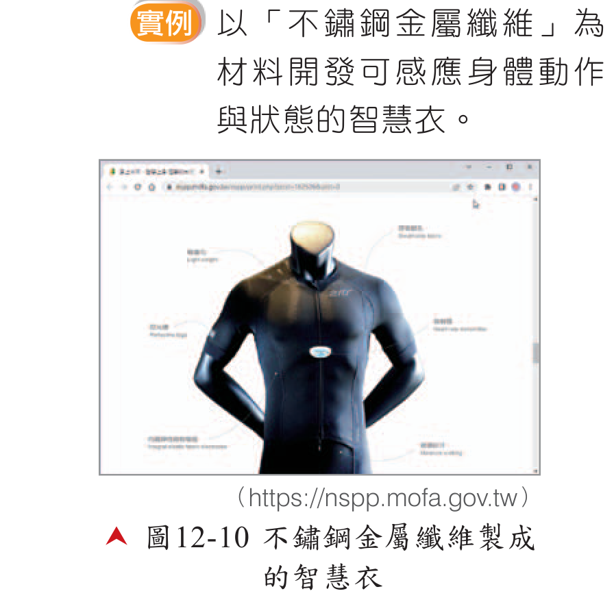

| 學說名稱 | 代表倡導學者 | 核心論點與利息成因 | 統測直觀速記口訣 |
|---|---|---|---|
| 忍慾說 （等待說） |
辛尼爾 （N. Senior） |
為累積資本而克制當前的消費慾望會產生痛苦，利息是對「克制消費慾望與等待」所給予的補償。痛苦愈大，利息補償應愈高。 | 克制慾望的報酬 （忍受痛苦等待補償） |
| 時間偏好說 （時差說） |
龐巴衛克 （Böhm-Bawerk） |
人們傾向「目前持有商品（確定狀態）」，而非「未來才持有（不確定性）」，此即時間偏好。要人們放棄現貨改持期貨，必須給予利息補償。 | 放棄現貨的補償 （現在確定 ＞ 未來期貨） |
| 邊際生產力說 | 大克拉克 （J. B. Clark） |
資本與勞動、土地相同具備實質生產力。利息大小取決於資本的邊際生產力（MPK）。若 MPK ＞ i 投資有利，應多借資金擴大投資。 | 資本增產的貢獻 （MPK ＞ i 值得借） |
| 迂迴生產說 | 龐巴衛克 （Böhm-Bawerk） |
先生產資本財再產消費財之迂迴生產可大幅提升效率。生產過程愈迂迴，所需資本愈多、產出愈大，資本財生產力愈高，廠商願付較高利率借款。 | 迂迴生產提升生產力 （愈迂迴願付利息愈高） |
統測金融實務術語換算（課本 P.31 階梯圖）：
例：年利率原本 7%，若央行調高半碼，則新利率 ＝ 7% ＋ 0.125% ＝ 7.125%；若調降 2 碼 ＝ 7% － 0.5% ＝ 6.5%。
以「是否考慮物價膨脹」劃分名目利率與實質利率：

經濟學對「市場均衡利率如何決定」歷經百年辯論，形成三大主流學說，統測常考三者之模型幾何架構與變數關聯：



| 持有貨幣動機 | 動機目的與實例 | 所屬餘額分類 | 關鍵影響變數與連動函數關係 |
|---|---|---|---|
| 1. 交易動機 | 應付日常生活或交易所需開支（買菜、付水電、搭公車捷運）。 | 活動餘額 （Active Balance） |
受「國民所得（Y）」影響！ 所得愈高，交易量愈大，預防突發事件能力愈強，貨幣需求愈多（所得的增函數：Y ↑ ➔ Md ↑）。與利率無關！ |
| 2. 預防動機 | 預防生病急診、車禍意外、失業等不時之需的緊急預備金。 | ||
| 3. 投機動機 | 隨時把握股匯市或資產市場上有利投資機會而保有的現金。 | 閒置餘額 （Idle Balance） |
🌟 唯一受「市場利率（i）」影響！ 利率愈低（i ↓），存銀行利息極微薄，大眾寧願抱緊現金伺機進場抄底，故投機貨幣需求增加（利率的減函數：i ↓ ➔ Md ↑）！ |
在生產過程中，土地、勞動、資本是「被動」的要素，不會自發組織生產；必須仰賴具有前瞻視野的「企業家」主動整合三者、承擔風險！
• 馬歇爾 1890 年歷史性劃分： 在《經濟學原理》中將企業家才能列為第四個生產要素，確立「資本家擁有所有權，賺取利息；企業家擁有經營管理權，賺取利潤」！
• 利潤的本質： 此處所指的利潤為「經濟利潤／超額利潤」，而非會計利潤。
| 比較項目 | 利潤（Profit，企業家才能之報酬） | 工資、地租、利息（勞動、土地、資本之報酬） | 統測重要考點與理由 |
|---|---|---|---|
| 1. 所得性質 | 剩餘所得（Residual Income） | 契約性所得（Contractual Income） | 工資地租利息依合約規定優先支付；利潤則是總營收扣除一切要素成本後的「最後剩餘」。 |
| 2. 確定性與正負值 | 不確定所得（其值可正、可負、可為零） | 確定所得（其值恆為正數 ＞ 0） | 工人工資不能欠，地主租金不能賴；但企業盈虧自負，經營不善利潤即為負數（虧損）！ |
| 3. 決定時間點 | 在生產之後決定 | 在生產之前決定 | 勞工時薪、廠房租金在動工前由契約敲定；真實利潤必須等商品全部賣光結帳後才能計算！ |
| 4. 是否適用邊際生產力 | 🌟 不適用邊際生產力說！ | 適用邊際生產力說（MRP ＝ P要素） | 才智相同的企業家在不同市場景氣下獲利大相逕庭，利潤受動態創新與市場結構影響，無法單憑邊際產量衡量！ |
| 5. 承擔風險性 | 必須全面承擔經營風險 | 原則上不承擔經營虧損風險 | 只要企業不倒閉，勞工與地主均穩領合約報酬；唯獨企業家承擔最終賠本風險。 |
| 學說名稱 | 代表倡導學者 | 學說核心論點 | 對利潤功能之評價 |
|---|---|---|---|
| 1. 獨占說 | 羅賓遜夫人 秦伯霖 |
完全競爭市場長期超額利潤為 0；唯有在「獨占」或高進入障礙保護下，廠商長期方能穩享超額利潤。 | 中性，反映市場進入障礙。 |
| 2. 風險說 | 奈特 （F. Knight） |
利潤是企業家在生產經營過程中，承擔那些無法計算、不可預測的真實不確定性與風險所應得的報酬。 | 肯定，鼓勵冒險精神。 |
| 3. 剝削說 | 馬克斯 （K. Marx） |
商品的全部價值均由勞動創造，企業家未付出體力勞動卻奪取「勞工剩餘價值」轉化為利潤。 | 全面否定！視利潤為剝削勞工之不當所得。 |
| 4. 創新說 （統測必考第一名） |
熊彼得 （J. Schumpeter） |
利潤是企業家在「動態社會」中從事「創新活動（Innovation）」所獲取的超額報酬！在靜態社會中，大家盲目跟進模仿，長期超額利潤必然歸零。 | 極度推崇！將企業家創新視為資本主義經濟成長的靈魂發動機！ |
【產品創新】： 開發市面上前所未見的全新財貨。實例：AI 智能陪伴學習機器人、賈伯斯推出初代 iPhone。
【工藝創新】： 引進革命性生產製程降本增效。實例：以 3D 列印技術製作模具、台積電引進 EUV 5奈米製程。
【市場創新】： 開拓尚未涉足的新客群或新通路。實例：Netflix 開創網路線上影音串流訂閱市場、跨國跨境電商。

【資源開發創新】： 發掘新型原材料取代傳統物資。實例：以不鏽鋼金屬纖維研發智慧感測衣、以廢棄寶特瓶製造環保機能球衣。
打破傳統企業經營型態，建立全新營運模式與組織架構。
• 課本最新實例： 「純網路銀行（Internet-Only Bank）」！全無實體分行據點，所有開戶、存匯借款業務皆 100% 在雲端 App 上完成（台灣已有 LINE Bank、將來銀行、樂天國際商業銀行三大純網銀上路執業）。